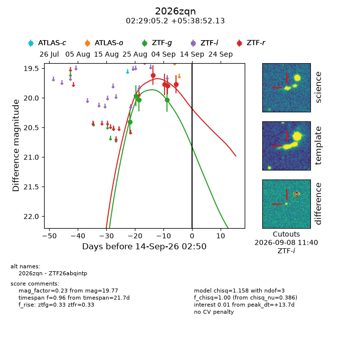
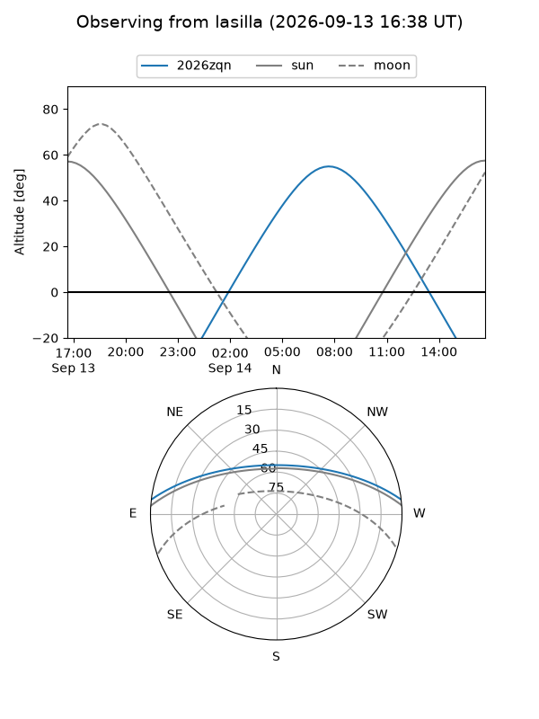
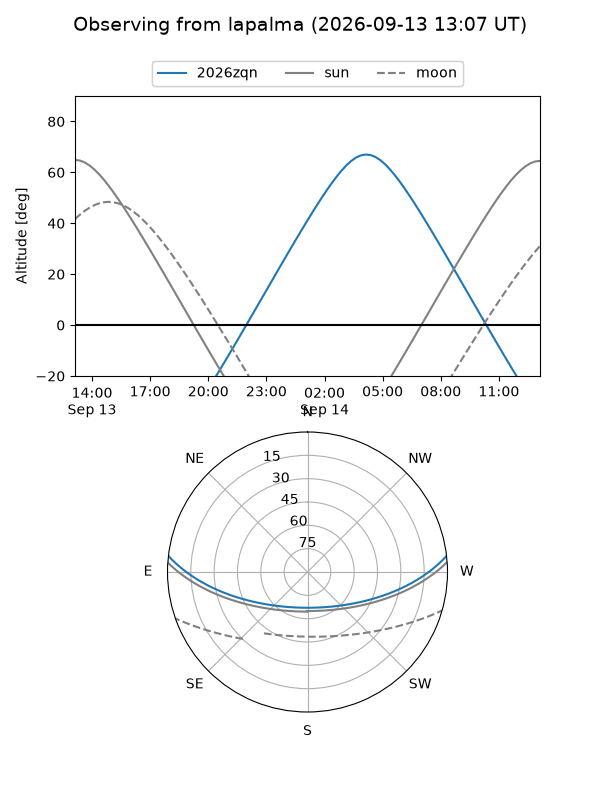
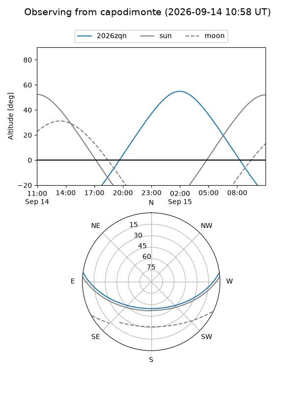
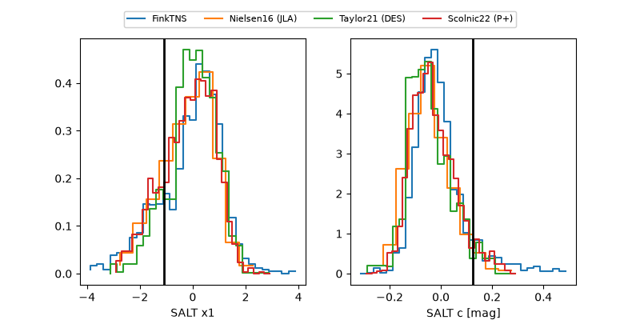

2026zqn
Target 2026zqn at 2026-09-14 14:32
Aliases and brokers:
FINK-ZTF: ztf.fink-portal.org/ZTF26abqintp
Lasair-ZTF: lasair-ztf.lsst.ac.uk/objects/ZTF26abqintp
ALeRCE-ZTF: alerce.online/object/ZTF26abqintp
YSE-PZ: ziggy.ucolick.org/yse/transient_detail/2026zqn
TNS name: wis-tns.org/object/2026zqn
Direct TNS query: direct search
alt names
ZTF26abqintp (ztf,fink_ztf)
2026zqn (tns,yse)
Coordinates:
equatorial (ra, dec) = 37.2717,+5.64781
equatorial (HMS+DMS) = 02:29:05.20,+05:38:52.13
galactic (l, b) = (162.3278,-49.60637)
Flags:
TNS type: nan
peak dt: +14.2
Photometry:
last ztfg=20.03, ztfr=19.77
4 ztfg, 4 ztfr detections
Lightcurve

Visibility



Additional plots
